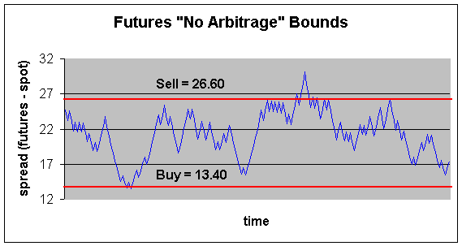

You may have heard financial sources, such as CNBC, talk about the futures quotes prior to the market open. Advanced market participants will watch the futures trading to get an idea of where the market will open. However, even advanced traders get confused as to exactly what this means. Often they associate the change in futures prices as the indication. For example, if the futures are trading up 20, many mistakenly believe this mean a positive indication for the open. Likewise, they feel if the futures are trading down 10, that the markets will open negatively.
While it may appear to make sense, this interpretation can get you into trouble especially if you are trading in pre-market based on the indication. In order to understand how to interpret the quote, you need to understand a concept called "fair value."
Before we can talk about fair value, we need to understand some basic mechanics of the futures markets. When you buy a futures contract, you are entering into an agreement to buy and take delivery of a commodity (or financial future) at a future date. This sometimes confuses people who are new to futures but you've probably entered into similar agreements although not specifically futures contracts. For example, if you have a contractor build a house or a car dealer order a car. You agree to take delivery at a future date and exchange cash at that time. The important thing to keep in mind is that, with futures contracts, the buys and sells are locked in! This is very different from the options market where the buyer has the right, but not the obligation to purchase. If you buy a futures contract, you must purchase the goods. If you sell a futures contract, you must deliver the goods. Of course, if you do want to get out of your obligation, you can execute a reversing contract just like in the options market.
Futures markets are used as hedging tools for both buyers and sellers. For example, a farmer would probably be a seller of wheat futures. He can grow the crops today and know in advance what his price will be at harvest. Likewise, Kellogg would probably be a buyer of wheat futures to lock in their purchase price of wheat for use in cereal.
The financial futures (SPX and NDX among others) are used for similar purposes. They allow fund managers to hedge portfolios. There are four contract months, each is the last month of the quarter. So, the contracts are March (represented by the letter "H"), June (M), September (U) and December (Z). Whenever you hear CNBC quoting fair value, they are always talking about the near-term contract.
Fair value is the relationship between the index (also called the "spot") and the corresponding futures contract. It has nothing to do with the fundamental value of the companies representing the index. Fair value tells us what the value of a futures contract "should be." But, because futures trade on separate markets from the spot market, they are subjected to their own sets of supply and demand so may wander off in different directions from the stock market. In fact, the futures trade all night long on GLOBEX, from 4:45pm until 9:15 am EST. But, if the futures get too far out of line, the arbitrageurs will correct for that prior to the opening bell.
Definition: Fair value is nothing more than the cost to carry the index to delivery to the future. What do we mean by cost of carry? It is the interest that could be earned on money in a risk-free asset such as a money market or T-bill. So, if you have an asset that costs $100 and must carry it for one year, your cost would be $10 if interest rates were 10%; this is the amount of money forgone by not having the money in the risk-free asset.
To simplify things, let's look at a simple commodity such as gold and assume the following:
Gold price: $200
Interest rate: 10%
1-year futures contract: $250
If you buy this futures contract, you are saying you will buy gold for $250 per ounce in one year. The person who sells this contract is saying they will sell gold for $250 per ounce in one year. Of course, as things change (i.e., supply and demand for gold, time remaining on contract etc.) so will the price of this contract.
Fair value to carry the gold is $200 * (1.10) = $220.
If you borrowed $200 to buy the gold, it would cost you $20 in interest; if you bought it with your own money, you would miss out on $20 in interest. So, either way you look at it, there is a $20 cost to buy the gold and hold for one year.
Because the 1-year futures contract is above the fair value, arbitrage is possible.
Note: In order for a transaction to qualify as arbitrage, two conditions must be met: (1) The transactions must guarantee a profit (2) there can be no initial cash outlay. The second condition is necessary otherwise the straight purchase of a government bond would qualify as arbitrage since profit is guaranteed.
With the fair value above the spot price, arbitrageurs will take the following strategy:
Today
Borrow $200: +$200
Buy gold in spot market: -$200
Sell the futures contract: $0
Net cash outlay: $0
1 year later
Deliver the gold against futures contract and
receive: +$250
Pay the interest from loan ($200 +
10%) -$220
for an arbitrage profit of
$30. $30
This is an arbitrage profit because there was no initial cash outlay to acquire the asset but we guaranteed our selling price by selling the futures contract.
Traders will buy the spot and carry it to the future thus creating their own futures contract. This is called "cash and carry" arbitrage. These actions will put buying pressure on the spot price and selling pressure on the futures contract, which will eventually eliminate the arbitrage opportunity.
In a perfect market, any futures price above $220 will result in cash and carry arbitrage.
What if the futures price is too low? Assume the following prices:
Spot price: $230
Interest rate: 10%
1-year futures contract: $250
Fair value = $230 * (1.10) = $253
In this case, the futures contract is below fair value. It "should be" priced at $253 but is only $250 so arbitrageurs will do the following strategy:
Today
Sell short gold: +$230
Lend proceeds at 10%: -$230
Buy the futures: $0
1 year later
Take delivery of the spot through futures
contract and cover short position: -$250
Collect proceeds from loan: +$253
For arbitrage profit
of $3
Notice that this is arbitrage because there was no cash outlay at beginning. We guaranteed the profit with the purchase of the futures contract. These actions should put buying pressure on the futures contract and selling pressure on the spot market, which will eventually eliminate the arbitrage opportunity.
In a perfect market, any futures price below fair value will result in this "reverse cash and carry arbitrage."
Remember, if the futures price is above fair value, arbitrageurs will buy the spot. If the futures price is below fair value, they will sell the spot.
We have seen how traders can arbitrage when futures are too high or too low. The only time they cannot arbitrage is when the futures contract is priced at the cost of carry -- the fair value!
We just showed that arbitrage is theoretically possible if the futures contract is either above or below fair value. However, in the real world, there are many imperfections that make arbitrage impossible even though the futures contract may be higher or lower than fair value. Some of these imperfections are:
1) Transaction Costs
2) Bid/Ask spreads
3) Restrictions on short sales
4) Different borrowing/lending rates
5) Execution risk
6) Lack of storability (for non-financial commodities)
Because of these imperfections, arbitrage may disappear even though the futures are not priced at their fair value.
For example, assume the following but with a 3%
transaction cost:
Gold price: $200
Interest rate: 10%
1-year futures contract: $225
Transaction costs: 3%
We know that fair value is $200 * (1.10) = $220 and the futures price is $225 so it appears that arbitrage is possible. Let's see if it is:
Today
Borrow $206 +$206
Buy gold in spot market ($200 + 3%) -$206
Sell the futures contract: $0
Net cash
outlay: $0
1 year later
Deliver the gold to make delivery of futures
contract: +$225.00
Pay the interest from loan ($206 +
10%) -$226.60
For net
loss -$1.60
Now, because of transaction costs, the arbitrage situation is eliminated. In this example, the futures would have to be priced at $226.60 or higher to execute a "cash and carry" arbitrage.
Using the above example but with futures priced too low, what happens with a 3% transaction cost?
Gold price: $200
Interest rate: 10%
1-year futures contract: $215
Transaction costs: 3%
We know that fair value is $200 * (1.10) = $220 so it appears the futures contract is priced too low at $215. Arbitrageurs will attempt to arbitrage by executing a reverse cash and carry.
Today
Sell short gold: +$194 (sell at $200 less a
3% transaction cost)
Lend at 10%: -$194
Buy the $215 futures: $0
Net cash outlay $0
1 year later
Take delivery of the spot through
futures contract and cover short position: -$215.00
Collect proceeds from loan: +$213.40
For net
loss: -$1.60
With the spot at $200, the futures contract would have to trade below $200*(0.97)*(1.1) = $213.40 before arbitrage could be implemented. So, with 3% transaction costs, the futures must trade in the range of $213.40 and $226.60 before arbitrage can be successful.
Any futures price inside this range results in NO arbitrage.
An easier way to state this is that if the spread (the difference between the futures and spot) is above $26.60 or below $13.40 then arbitrage will occur.
For instance, using the above example with the spot at $200 and the futures at $215, the spread would be $215 - $200 = $15. Because $15 lies between the "no arbitrage" bounds of $13.40 and $26.60, then no arbitrage can occur.
Often you will hear sources refer to "buy and sell program" values. This is exactly what the buy and sell programs tell us. If an index has buy programs at $26.60 and sell programs at $13.40, then if the spread (the difference between the futures and spot) rises above $26.60 the arbitrageurs will buy the index and sell the futures for a guaranteed profit. This creates buying pressure on the index, which is why it is labeled as "buy." If the spread falls below $13.40, then arbitrageurs will short the index and buy the futures for a guaranteed profit. This causes selling pressure on the index and is therefore labeled "sell."
So, the futures are allowed to wander within an "invisible fence" around the fair value as shown in the chart below. The fence is created by the transaction costs and other market imperfections listed above. Again, any spread within this fence results in no arbitrage.
Also notice that the number of points above and below fair value is the same. In the above example, fair value is $220 with buy programs at $26.60 and sell at $13.40. This is 6.6 points above and below the $20 fair value. Assuming equal transaction costs on the buy and sell programs, the number of points above and below fair value will always be equal.
It is important to keep in mind that it is the spread (the difference between the futures and spot) that counts.
In the above example, the spread must expand to $26.60 or higher before the sell programs start. The spread can increase by several cases such as: (1) the futures can increase while the spot stays the same (2) the spot can decrease while futures stays same (3) futures rise and spot falls (4) futures and spot rise but futures rise at a faster rate.
This shows that program trading (arbitrage) does not necessarily guarantee a correction toward fair value. If the futures and spot are both rising, but the futures is rising at a faster rate then the index may stay in sell territory for extended periods of time, possibly the entire day. As long as the spread remains outside the upper arbitrage bounds, sell programs will continue. In a similar but opposite way, buy programs can exist for extended times. If the spread shrinks (i.e., the spot market is falling faster than the futures), then buy programs will continue.
Now that you understand that fair value is nothing more than the cost of carry of the underlying asset, there is just one adjustment you need to make to fully understand how fair value is calculated for the S&P 500 (SPX) or Nasdaq (NDX) futures.
If you buy all the stocks in the index on margin and carry them to the future (cash and carry arbitrage) you will receive some dividends, which offsets your cost of carry. So, if the risk-free rate is 5% and you receive 3% in dividends, effectively your cost of carry is (5%-3%) = 2%.
Futures contract * (1+ (interest - dividends) ) ^ days/360
And that is the formula for Fair Value!
Example: Say the NDX index closed last night at 3465. The futures closed at 3490. However, the futures traded throughout the night and are now trading at 3550. Also assume that fair value calculations put fair value at 3550. What does this imply for the opening of the Nasdaq market?
The futures are currently 3550 but closed at 3490 so the futures will be indicating UP 60 points (3550 - 3490). But, the fair value formula says the futures "should be" trading at 3550 so they are, in essence, priced fairly. This is actually a neutral or flat indication for the opening even though the futures are up. The futures may be up from their closing price the day before, but they are currently trading for fair value.
Most Important Concept!
Here is where most people get tripped up when looking at futures quotes. Say we use the same example above but now, instead, the futures are trading for 3495. Here, the futures closed at 3490 but are now trading for 3495 so the quote will show the futures up 5.
KEY POINT: If you get nothing else from all this, please understand that just because the futures are UP that this, in itself, does not tell you the indication for the opening of the market. You need to know where fair value is.
Likewise, just because the futures quote is down does not mean that it is a negative indication for the market.
In this second example, the futures are trading for 3495 but "should be," based on the fair value calculation, trading for 3500. In essence, they are still cheap even though their price increased overnight. Arbitrageurs will buy the futures and sell the spot. So, even though the futures are up, in this case, it is actually a negative indication for the market!
The concept of fair value is of little use for retail investors other than to satisfy their curiosity as to the direction of the market at the opening bell. Where many investors get in trouble is to either buy or sell in the pre-market (such as selectnet) based on the futures quote. Before you base your decisions on the futures quote, make sure you know where it is in relation to fair value. It is only then that you will truly know the expectation of the market on the opening bell.